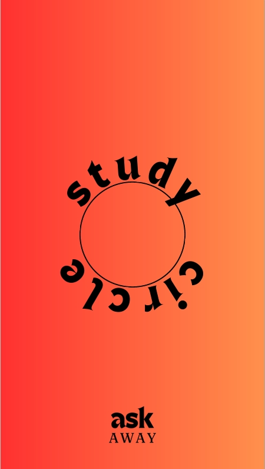

Problem Statement

People who work on problems or assignments, specifically college students, would benefit from a better collaboration and support resource in which students can collaborate in channels dedicated to their specific classes or projects all within one application.
Affinity Diagram

Affinity Diagram visualizing possible ideas, problems, and aspects of our application.
Sketches

A collection of drawings of different aspects of studycircle, including the Home Page, app flow chart, and QandA Screen.
Persona Bios

A few different examples of who uses our app including a freshman in college, an international university student, and a graduate TA.
Storyboards

A few examples of how our different personas would utilize the app from finding study groups and asking classmates for help, to seeing what content students are struggling with.
Prototype
This video and commentary walks the user through the different functions of StudyCircle